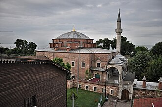

Prezentare
L'église des Saints-Serge-et-Bacchus est une ancienne église grecque orthodoxe de Constantinople, convertie sous l'empire ottoman en une mosquée connue aujourd'hui sous le nom de Petite Hagia Sophia.
The Little Hagia Sophia mosque, formerly the Church of Saints Sergius and Bacchus, is a former Greek Orthodox church dedicated to the Syrian Christian Saints Sergius and Bacchus in Constantinople. Its date of construction is disputed, with some scholars favouring a mid-520s date with groundbreaking by 527 and others preferring to date its construction between 532 and 536, and converted into a mosque during the Ottoman Empire.
Küçük Ayasofya Camii, İstanbul'un Küçük Ayasofya Mahallesi'ndeki cami. Bizans İmparatoru I. Justinianus ve eşi Theodora tarafından 527-536 yılları arasında Aya Sergios ve Bakhos Kilisesi adıyla yaptırılan kilise, 1497'de II. Beyazıt dönemi Darüssaade ağası Hüseyin Ağa tarafından camiye çevrilmiştir.
Masjid Hagia Sophia Kecil atau yang sebelumnya bernama Biara Santo Sergius dan Bacchus, adalah sebuah masjid bersejarah peninggalan Bizantium yang berada di kota Istanbul, Provinsi Istanbul, Turki. Bangunan ini awalnya merupakan bekas gereja Ortodoks Yunani yang didedikasikan kepada Santo Sergius dan Bacchus di Konstantinopel, dibangun antara tahun 532–536, dan diubah menjadi masjid selama periode Ottoman.
ایا صوفیہ صغری جو پہلے ایک یونانی چرچ تھا جو 532 سے 536 عیسوی میں تعمیر ہوا اور عثمانی دور میں ایک مسجد میں تبدیل ہو گیا۔
Die Kleine Hagia Sophia ist die ehemalige orthodoxe Sergios- und Bakchos-Kirche in Istanbul und seit 1504 eine Moschee. Der byzantinische Kuppelbau wurde im 6. Jahrhundert n. Chr. errichtet und ist architektonisch eng verwandt mit der „großen“ Hagia Sophia, der Hauptkirche des byzantinischen Reiches. Das Gebäude gehört zu den wichtigsten frühbyzantinischen Bauwerken Istanbuls. Als Kirche war sie den Heiligen Sergios und Bakchos geweiht und bildete einen Teil des Sergios- und Bakchos-Klosters.
La iglesia de San Sergio y San Baco, conocida en turco como mezquita Pequeña Santa Sofía, es una mezquita de Estambul, Turquía, que tiene su origen en una iglesia ortodoxa dedicada a San Sergio y San Baco en Constantinopla, que se convirtió en templo musulmán durante el Imperio otomano.
Piccola Santa Sofia è una ex-chiesa bizantina convertita in moschea dopo la conquista ottomana di Costantinopoli. L'edificio fu iniziato nel 527, primo anno di regno di Giustiniano I. All'inizio del XVI secolo venne trasformata in moschea. È nota in turco come Küçük Aya Sofya Camii per affinità architettoniche con la vicina basilica di Hagia Sophia.
A antiga Igreja de São Sérgio e São Baco, mais conhecida atualmente por Pequena Santa Sofia foi uma igreja ortodoxa bizantina da cidade de Constantinopla, a atual Istambul, na Turquia.
De Kleine Hagia Sophia is een voormalige orthodoxe kerk gewijd aan de heiligen Sergius en Bacchus die tegenwoordig als moskee dienstdoet. Het gebouw bevindt zich in het moderne Istanbul in het district Fatih, ten zuiden van de hippodroom niet ver van de Zee van Marmara. Het werd gebouwd ten tijde van keizer Justinianus I in het begin van de zesde eeuw en heeft duidelijke overeenkomsten met de Hagia Sophia, waarvan de bouw in 532 begon.
小聖索菲亞清真寺，原为东正教圣谢尔盖和巴克斯教堂，建于6世纪，是伊斯坦布尔重要的早期拜占庭建筑之一，靠近马尔马拉海和君士坦丁堡大皇宫遗址。奥斯曼帝国时期改为清真寺。
퀴취크 아야소피아 모스크(튀르키예어: Küçük Ayasofya Camii 퀴취크 아야소피아 자미[*])는 536년에 완성된 튀르키예 이스탄불의 모스크이다. 유스티니아누스 1세가 아야 소피아 건설에 앞서 지어진 것으로, 원래는 교회로 사용되어 성 세르지오와 바코 교회(그리스어: Ἐκκλησία τῶν Ἁγίων Σεργίου καὶ Βάκχου ἐν τοῖς Ὁρμίσδου)라는 이름이었다.
Церковь Святых Сергия и Вакха — одна из самых древних сохранившихся церквей Стамбула, послужившая прообразом для Сан-Витале и собора Святой Софии. По всей видимости, является работой тех же мастеров — Исидора Милетского и Антемия Тралльского. Храм посвящён святым Сергию и Вакху.
Mica Hagia Sophia, cunoscută oficial ca Mica Moschee Ayasofya este o moschee din Istanbul, Turcia. La origine, aceasta a fost o biserică bizantină construită din ordinul împăratului Iustinian I, între anii 532-536. Ulterior, biserica a devenit moschee în prima jumătate a secolului al XVI-lea.
Pe hartă
Documente și legături
- Wikipédia — Français
- Wikipédia — العربية
- Wikipédia — English
- Wikipédia — Türkçe
- Wikipédia — Bahasa Indonesia
- Wikipédia — اردو
- Wikipédia — Deutsch
- Wikipédia — Español
- Wikipédia — Italiano
- Wikipédia — Português
- Wikipédia — Nederlands
- Wikipédia — 中文
- Wikipédia — 한국어
- Wikipédia — Русский
- Wikipédia — Română
- Wikidata — Q1144576
Date: Wikidata (CC0), actualizate la fiecare 3 luni. Anul este cea mai veche dată de construcție cunoscută a clădirii: pentru o clădire devenită moschee mai târziu (precum Sfânta Sofia), este cea a clădirii originale. Fotografii: Wikimedia Commons, autorul și licența pe pagina fiecărei fotografii.